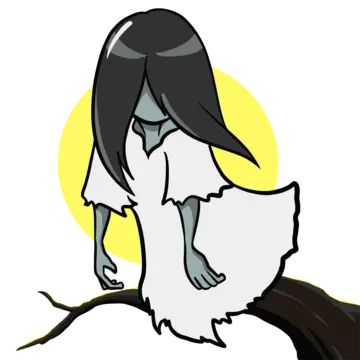
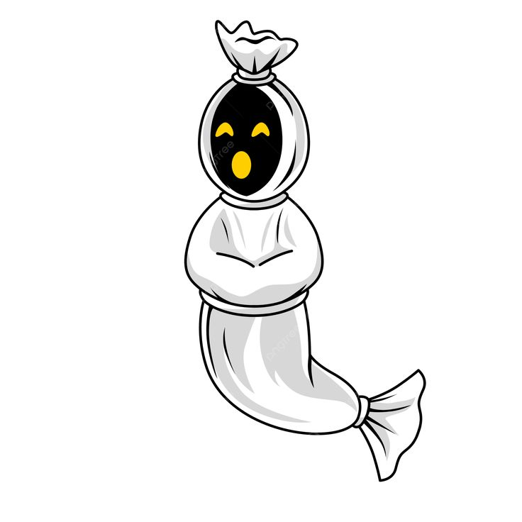
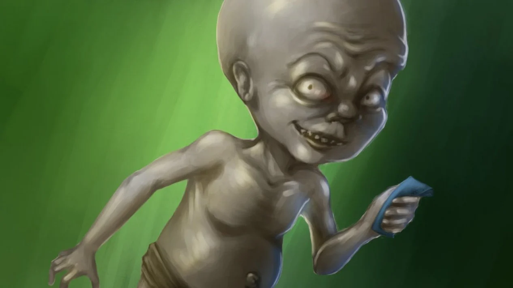
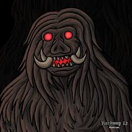
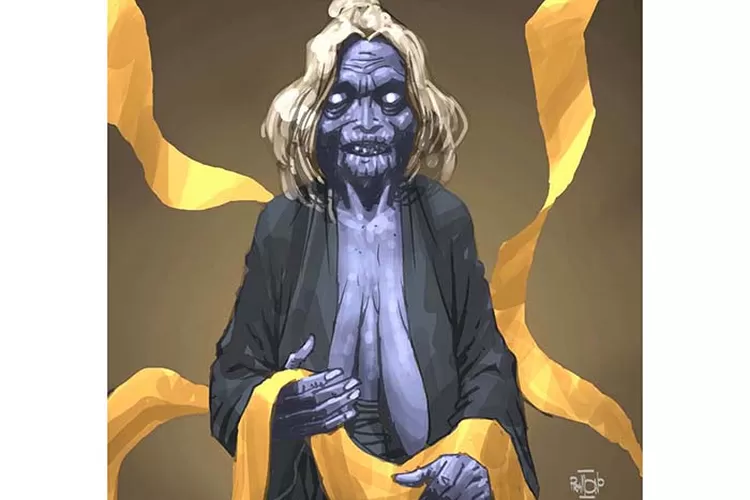
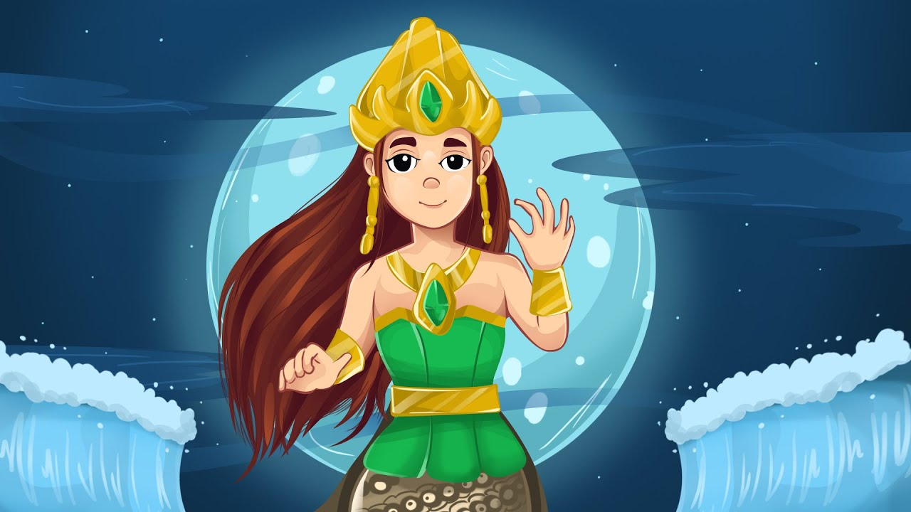
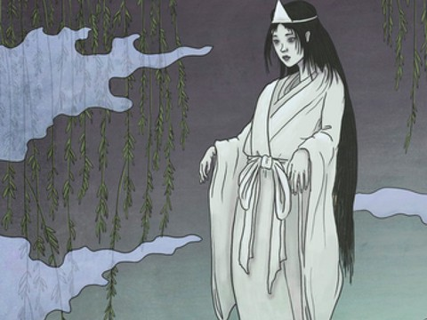
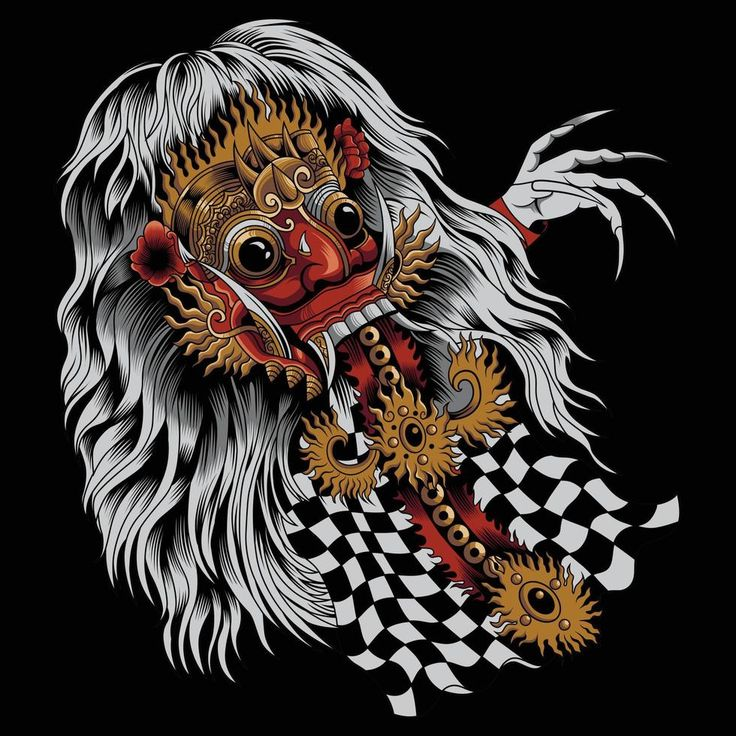
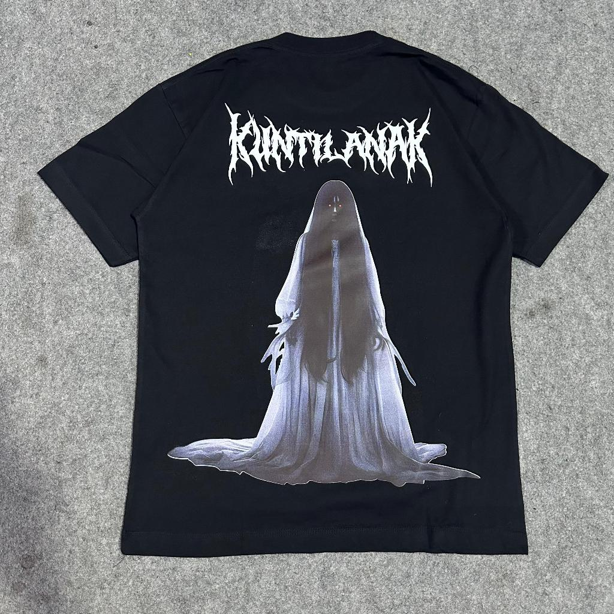
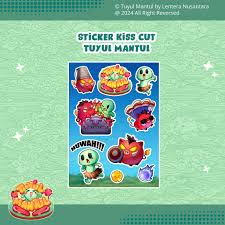

Selamat Datang di Eksplorasi Mitos dan Legenda Urban Indonesia
Jelajahi kisah-kisah misterius dan legenda urban yang berkembang di Indonesia. Temukan cerita menakutkan, mitos kuno, dan legenda yang telah menjadi bagian dari budaya kita.
🕵️♂️ Jelajahi Mitos
Temukan berbagai mitos dari berbagai daerah di Indonesia
🏙️ Legenda Urban
Kisah-kisah misterius yang berkembang di kota modern
🧠 Kuis Interaktif
Test pengetahuanmu tentang mitos dan legenda
🛍️ Merchandise
Beli merchandise unik dengan tema mitos dan legenda
Eksplorasi Mitos dan Legenda Urban Indonesia
Jelajahi kisah-kisah misterius dan legenda urban yang berkembang di Indonesia

Mitos Kuntilanak
Kuntilanak adalah roh wanita jahat yang sering muncul sebagai wanita cantik dengan rambut panjang menutupi wajahnya. Mitos ini berkembang di berbagai daerah di Indonesia.
Kuntilanak diyakini sebagai roh wanita yang meninggal saat melahirkan atau dibunuh. Ia sering muncul di malam hari dan menjerit seperti bayi menangis untuk menarik perhatian korban.

Legenda Urban Pocong
Pocong adalah mayat yang dikafani dan dikubur, namun rohnya tidak tenang sehingga bangkit dan melompat-lompat mencari jalan.
Legenda ini sering dikaitkan dengan prosesi pemakaman yang tidak sempurna. Pocong diyakini akan terus melompat hingga kain kafannya disobek atau ia menemukan kedamaian.

Mitos Tuyul
Tuyul adalah makhluk kecil seperti anak-anak yang digunakan oleh dukun untuk mencuri uang.
Tuyul biasanya digambarkan sebagai anak kecil telanjang dengan rambut panjang. Ia bisa menyusup ke rumah orang untuk mengambil uang dan membawanya kepada majikannya.
Legenda Urban Kuyang
Kuyang adalah roh wanita yang keluar dari tubuhnya saat tidur, meninggalkan tubuh kosong.
Kuyang sering dikaitkan dengan praktik ilmu hitam. Ia terbang di malam hari mencari korban, terutama wanita hamil atau bayi.

Mitos Genderuwo
Genderuwo adalah makhluk besar berbulu yang hidup di hutan dan sering mengganggu manusia.
Genderuwo diyakini sebagai penjaga hutan. Ia bisa berubah bentuk dan sering muncul sebagai pria tampan untuk menarik perhatian wanita.

Mitos Wewe Gombel
Wewe Gombel adalah roh jahat yang sering muncul di malam hari dengan penampilan menyeramkan.
Wewe Gombel diyakini sebagai roh wanita yang meninggal tragis. Ia sering mengganggu orang yang lewat di jalanan sepi dengan penampilan mengerikan.
Legenda Urban Suster Ngesot
Suster Ngesot adalah legenda urban tentang hantu perawat yang menyeret korbannya ke bawah tempat tidur.
Legenda ini sering dikisahkan di rumah sakit atau tempat-tempat terpencil. Suster Ngesot muncul dengan seragam perawat dan menarik kaki korban ke bawah tempat tidur.

Mitos Nyi Roro Kidul
Nyi Roro Kidul adalah ratu laut selatan yang diyakini sebagai penguasa pantai selatan Jawa.
Nyi Roro Kidul adalah sosok mitis yang sering dikaitkan dengan kerajaan Pajajaran. Ia diyakini sebagai penjaga laut dan sering muncul sebagai wanita cantik berbaju hijau.

Legenda Urban Hantu Jepang
Hantu Jepang adalah legenda tentang roh tentara Jepang yang masih berkeliaran di Indonesia.
Legenda ini berkembang pasca-Perang Dunia II. Hantu Jepang sering digambarkan sebagai tentara dengan seragam compang-camping yang mencari jalan pulang.

Mitos Rangda
Rangda adalah ratu iblis dalam mitologi Bali yang sering digambarkan sebagai sosok menakutkan.
Rangda adalah tokoh antagonis dalam cerita Kecak dan Tari Barong. Ia sering dilawan oleh Barong, simbol kebaikan, dalam pertarungan abadi antara baik dan jahat.
Kuis Mitos dan Legenda
Skor Anda: 0/0
🛍️ Merchandise Mitos dan Legenda

Kaos Kuntilanak
Kaos bergambar Kuntilanak dengan desain menakutkan. Bahan cotton combed 30s, nyaman dipakai.
Rp 85.000
Mug Pocong
Mug keramik dengan ilustrasi Pocong melompat. Kapasitas 350ml, cocok untuk kopi atau teh.
Rp 45.000

Stiker Pack Tuyul
Pack stiker vinyl dengan berbagai ilustrasi Tuyul lucu dan menakutkan. Waterproof dan tahan lama.
Rp 25.000
Poster Genderuwo
Poster A3 dengan ilustrasi Genderuwo mistis. Cocok untuk dekorasi kamar atau ruang kerja.
Rp 35.000
Kalung Nyi Roro Kidul
Kalung dengan liontin bergambar Nyi Roro Kidul. Terbuat dari stainless steel, anti karat.
Rp 75.000
Buku Cerita Rangda
Buku komik tentang legenda Rangda dari Bali. Ilustrasi penuh warna dengan cerita lengkap.